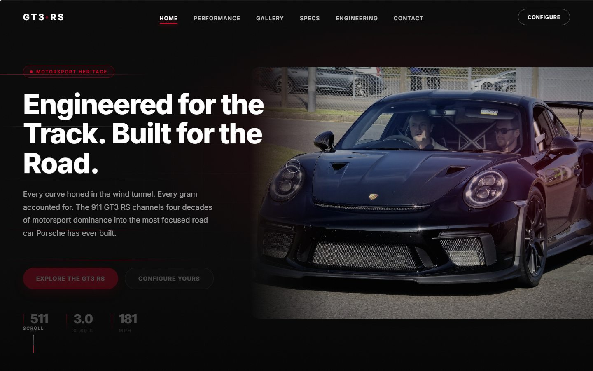

FORGE — Elite Performance Training
A concept landing page for a 24/7 training facility. A real-time 3D dumbbell anchors the hero, and the scroll carries you through programs, coaches, and memberships without ever dropping a frame.
View Live SiteFront-End Design & Development
I design and build landing pages and interfaces by hand — real-time 3D, scroll-driven motion, and not a framework in sight.
Selected Personal Projects
A concept landing page for a 24/7 training facility. A real-time 3D dumbbell anchors the hero, and the scroll carries you through programs, coaches, and memberships without ever dropping a frame.
View Live Site

An unofficial concept page for Porsche's most focused road car, built as a motion study. A timed preloader, line-by-line headline reveals, counting spec figures, and a lightbox gallery — all hand-built, zero framework.
View Live Site

An unofficial concept page built on a print metaphor: four-colour process separations, headlines that sit slightly out of register like a misaligned plate, and photography halftoned onto a warm press sheet. A rev counter sweeps to the redline and the spec figures count up as they scroll into view.
View Live SiteWhat I Do
Interfaces built around clarity, intent, and delight at every step.
Fast, resilient front ends written by hand — clean code, no framework tax.
WebGL and Three.js scenes that sit in the hero without dropping frames.
Scroll-driven reveals, magnetic controls, and transitions that feel deliberate.
Keyboard-operable, reduced-motion aware, and legible at every width.
Sub-second loads, lazy media, and a page that degrades gracefully without JS.
Process
I dig into your business, your users, and your goals to define the real problem.
A clear roadmap connecting business objectives to product decisions.
High-fidelity, considered interfaces refined through iteration.
Production-grade builds with clean architecture and testing.
A coordinated release with monitoring and rollback plans in place.
Ongoing measurement and refinement after launch.
How I Build
Nothing off the shelf — every pixel considered.
Performance budgets enforced from day one.
Built to be found, not just to look good.
WCAG-conscious by default, not an afterthought.
Architecture that grows with your product.
Best practices baked into every build.
Tools chosen for longevity, not trends.
You talk to the person writing the code. No account layer.
FAQ
A landing page of this scale takes roughly 2–4 weeks from brief to launch. Larger builds scale from there — I'll give you a range before any work starts.
No — the three builds above are self-directed concept projects, designed and coded start to finish to push specific techniques. Every line of them is mine, and they are all live and clickable.
Fixed price for a defined scope, or an hourly rate for open-ended work. Whichever fits, you get the number in writing before I start.
Usually, yes. I read it first and tell you honestly whether extending it or rebuilding is the better call — including when the honest answer is that you don't need me.
You get the full source, a short handoff write-up, and me on email for bug fixes after launch. Ongoing work is a separate arrangement.
Tell me what you're building and I'll tell you honestly whether I'm the right person for it.